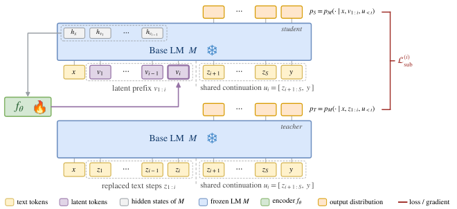
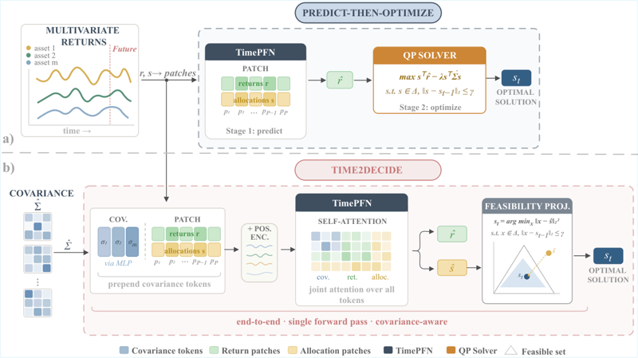
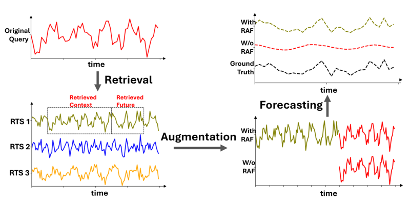
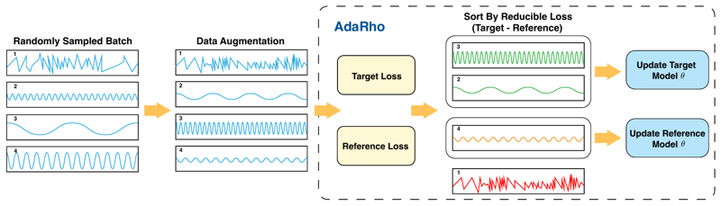

|
Kutay Tire
I am a Ph.D. student in Electrical and Computer Engineering at the University of Texas at Austin, advised by Prof. Sujay Sanghavi and Prof. Haris Vikalo. My research focuses on machine learning for time-series and tabular data, reasoning in large language models, and optimization.
Most recently, INTACT trains a small external encoder that induces latent reasoning in a frozen LLM, improving accuracy while cutting end-to-end latency. As a research intern with Prof. Samet Oymak at the University of Michigan, I work on time-series forecasting and on transformers for optimization and decision making.
Before UT Austin, I earned B.S. degrees in Computer Engineering and in Physics (valedictorian of the Physics cohort) from Bilkent University, where I worked with Prof. Eray Tüzün. I was also a summer research intern at the University of Cambridge with Prof. Cengiz Öztireli.
Email /
CV /
Google Scholar /
GitHub /
LinkedIn
|
|
|
Reasoning in Language Models
|
|

|
NEW
INTACT: Inducing Latent Reasoning on a Frozen Backbone
Kutay Tire, A. Tejaswi, Haris Vikalo, and Sujay Sanghavi
arXiv preprint, 2026
PDF
arXiv
A small external encoder maps a frozen LLM's hidden states into continuous "soft-token" reasoning blocks, after which the frozen model writes the rest of its reasoning and answer as text. Trained by distillation and then reinforced on answer correctness, INTACT improves GSM8K and out-of-domain accuracy across four frozen backbones (1B–8B) and reduces end-to-end latency by 19% on Llama-3.2-3B.
|
|
Time Series and Decision Making
|
|

|
Covariance-Aware Transformers for Quadratic Programming and Decision Making
Kutay Tire, Y. Zhang, E. O. Taga, and Samet Oymak
Conference on Language Modeling (COLM), 2026
PDF
arXiv
We show that linear attention can provably solve unconstrained quadratic programs by emulating gradient descent, and that adding MLPs extends this to ℓ1-penalized and ℓ1-constrained QPs. Building on this, Time2Decide feeds the covariance matrix between variates to a time-series foundation model and outperforms both the base model and Predict-then-Optimize on portfolio optimization, in a single forward pass.
|
|

|
Retrieval-Augmented Time Series Forecasting
Kutay Tire, E. O. Taga, M. E. Ildiz, and Samet Oymak
International Conference on Artificial Intelligence and Statistics (AISTATS), 2026
PDF
arXiv
We ask whether the benefits of retrieval-augmented generation carry over to time-series foundation models such as Chronos, and introduce Retrieval Augmented Forecasting (RAF), with efficient strategies for retrieving related series and incorporating them into the forecast. RAF improves zero-shot accuracy across diverse domains, with larger gains for larger models.
|
|

|
Filter, Augment, Forecast: Online Data Selection for Robust Time Series Forecasting
E. O. Taga, H. A. Gozeten, Kutay Tire, R. Dalvi, R. Heckel, and Samet Oymak
International Conference on Artificial Intelligence and Statistics (AISTATS), 2026
An earlier version appeared at the ICML 2025 Workshop on Foundation Models for Structured Data.
PDF
OpenReview
An online data-curation strategy for time-series forecasting that filters out low-quality training examples and augments the rest. Its filter, AdaRho, adapts reducible-holdout-loss selection to the domain shifts common in time series by updating the reference model during training, and a random-matrix-theory analysis characterizes how the reference model, sample size and noise shape the selection. Applied to eight architectures without modifying them, FAF reduces MSE by 6.55% on average across 9 datasets.
|
|
Machine Learning for Software Engineering
|
|
Service
Conference reviewer: AISTATS (2025, 2026), AAAI (2026), COLM (2026), ICLR (2027)
Gold reviewer: ICML (2026)
|
|